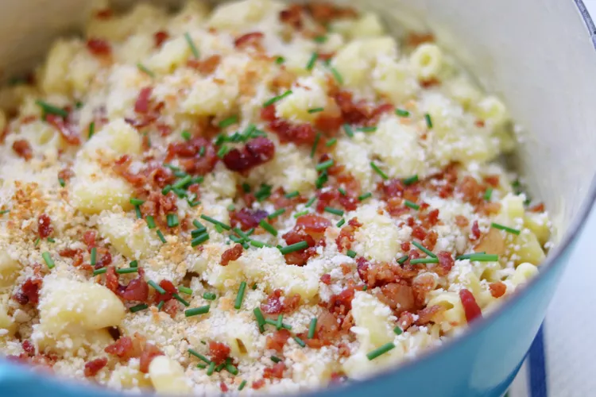

Home
Mac And Cheese

This is a quick and easy recipe for a classic mac and cheese.
Ingredients
- 16 ounces uncooked elbow macaroni
- 2 cups milk
- 1 teaspoon garlic salt
- 1/4 cup margarine
- 1 1/2 cup shredded white cheddar
- 1 1/2 cups Parmesan cheese
- 1/4 cup panko bread crumbs
- 1/2 cup real bacon bits
Steps
- Combine macaroni, milk, water, garlic salt, and salt in a Dutch oven over medium-high heat; bring to a boil, stirring occasionally. Reduce heat to a simmer; cook, stirring frequently until macaroni soft and most of the liquid has been absorbed, 7 to 10 minutes
- Off heat, stir in margarine and black pepper until melted. Stir in Cheddar cheese and 1/4 cup Parmesan cheese until melted
- Top macaroni with bread crumbs, remaining 1/4 cup Parmesan cheese, and bacon bits
- Set an oven rack about 6 inches from the heat source and preheat the oven's broiler
- Broil until topping is lightly browned and crispy, 1 to 3 minutes. Top with chives and serve immediately